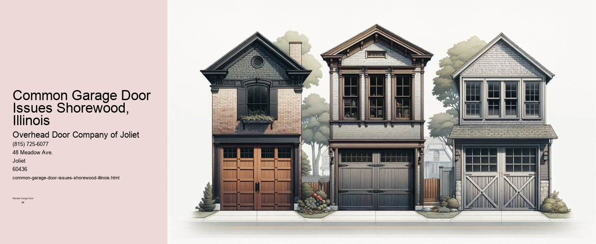

This article needs additional citations for verification. (September 2021) |

Common Garage Door Issues in Shorewood, Illinois
Garage doors are an essential component of many homes in Shorewood, Illinois, serving not only as a critical entry point but also as a significant aspect of the homes aesthetic and security features.
One of the most prevalent issues with garage doors is a failure to open or close properly. This can be caused by a variety of factors, including problems with the garage door opener, issues with the remote control, or obstacles blocking the doors path. In some cases, the solution may be as simple as replacing the batteries in the remote or ensuring that nothing is obstructing the door. However, more complex issues, such as a malfunctioning opener motor, may require professional assistance.
Another common problem is the garage door making excessive noise during operation. This can be a sign of various underlying issues, such as loose hardware, worn rollers, or a lack of lubrication on the moving parts. Regular maintenance, including tightening bolts and applying lubricant to the tracks and rollers, can often resolve these issues. If the noise persists, it may indicate more severe problems, such as a need for roller replacement or track realignment.
Broken springs are another frequent concern for garage door owners in Shorewood. The springs are essential for counterbalancing the weight of the door, allowing it to open and close smoothly. Over time, these springs can wear out or break, making the door difficult or impossible to operate. Because dealing with springs can be dangerous due to the high tension they are under, it is advisable to hire a professional for spring replacement.
Weather conditions in Shorewood can also contribute to garage door issues. The regions cold winters and humid summers can cause parts to expand and contract, leading to warping or misalignment.
Finally, sensor problems can cause the garage door not to function correctly. Modern garage doors are equipped with sensors that prevent the door from closing if an object is detected in its path. If these sensors become misaligned or dirty, they may not work properly, causing the door to behave unpredictably. Cleaning the sensors and ensuring they are correctly aligned can often resolve these issues.
In conclusion, while garage doors in Shorewood, Illinois, are generally reliable, they are not immune to problems. Regular maintenance and timely repairs can help extend the life of a garage door and ensure it operates safely and efficiently. Homeowners should be vigilant about potential issues and seek professional help when needed to address more complex or hazardous repairs. By doing so, they can maintain the functionality and security of their garage doors for years to come.
This article needs additional citations for verification. (September 2021) |